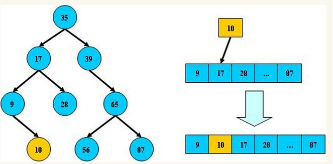
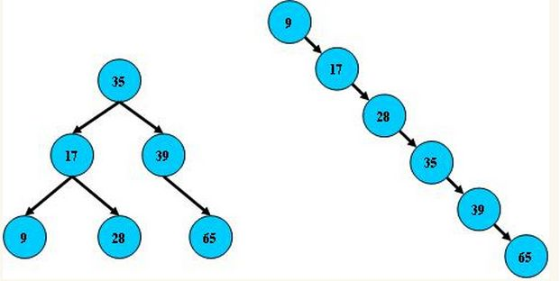
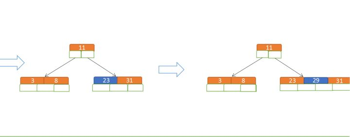
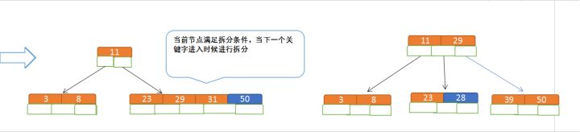
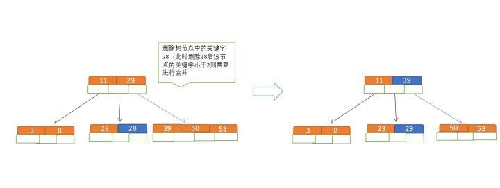
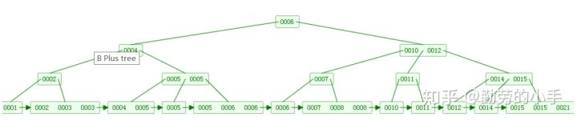
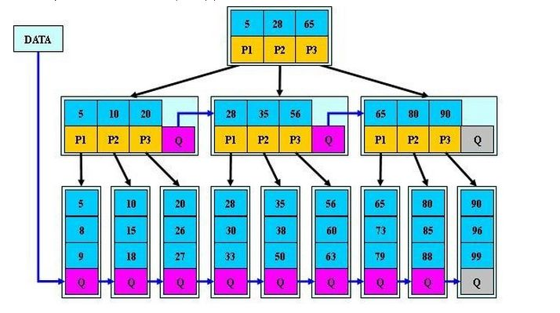

B树
平衡二叉树
概念
平衡二叉树 是基于 二分法 的策略 提高数据的查找速度 的 二叉树 的数据结构
平衡二叉树是采用二分法思维把数据按规则组装成一个树形结构的数据 用这个树形结构的数据减少无关数据的检索，大大的提升了数据检索的速度
特点
平衡二叉树的数据结构组装过程有以下规则：
- 非叶子节点 只能允许 最多两个 子节点 存在
- 每一个 非叶子节点 数据分布规则： 左边的子节点 小于 当前节点 的值， 右边的子节点 大于 当前节点 的值
这里值是基于自己的算法规则而定的：比如 hash值

平衡二叉树 查询性能 和 树的层级（h高度） 成 反比 ，h值越小查询越快
为了保证树的结构左右两端数据大致平衡降低二叉树的查询难度，一般会采用一种算法机制实现节点数据结构的平衡 实现了这种算法的有比如AVL、Treap、红黑树
使用 平衡二叉树 能保证 数据的左右两边的 节点层级 相差不会大于1 ，通过这样避免树形结构由于删除增加变成线性链表影响查询效率，保证数据平衡的情况下查找数据的速度近于二分法查找：

总结
- 非叶子节点最多拥有两个子节点
- 非叶子节值大于左边子节点、小于右边子节点
- 树的左右两边的层级数相差不会大于1
- 没有值相等重复 的节点
B树
概念
B树 和 平衡二叉树 稍有不同的是B树属于 多叉树 （平衡多路查找树）
数据库“索引”技术里大量使用者B树和B+树的数据结构
规则
- 排序 方式：所有节点关键字是按 递增次序 排列，并遵循 左小右大 原则
- 子节点数 ：
- m：代表一个树节点最多有多少个查找路径：当m=2是2叉树，m=3是3叉
- m >= 2
- 1 < 非叶节点的子节点数 <= m（空树除外）
- 关键字数 ：
- ceil：是个 朝正无穷方向取整 的函数 ：ceil(1.1)的结果为2
- ceil(m/2) - 1 <= 枝节点 的关键字数量 <= m-1
- 所有叶子节点均在同一层 ，叶子节点包含：
- 关键字
- 关键字记录的指针
- 指向其子节点的指针 ：其指针地址都为 null （最后一层节点的空格子）
最后用一个图和一个实际的例子来理解B树

为了理解方便直接用实际字母的大小来排列
查找
上图要从上图中找到 E 字母，查找流程如下
- 获取 根节点的关键字 进行比较，当前根节点关键字为 M ， E<M ： 往下 找到 指向左边的子节点
- 拿到关键字 D 和 G ， D<E<G ： 直接找到 D和G中间的节点
- 拿到 E 和 F ，因为 E=E ： 直接返回 关键字和指针信息
如果树结构里面没有包含所要查找的节点则返回 null
插入
定义一个 5阶树 ，现在要把3、8、31、11、23、29、50、28 这些数字构建出一个5阶树出来;
遵循规则：
- 节点拆分 规则：关键字数必须 <= (5-1) ，因此 关键字数 >4 就要进行节点拆分
- 排序 规则：满足节点本身比左边节点大，比右边节点小
先插入 3、8、31、11：

再插入23、29：

再插入50、28：

删除
- 节点合并 规则：关键字数 >= ceil（5/2），因此这里 关键字数 <2 就要进行节点合并
- 先从子节点取，子节点没有符合条件时就向父节点取，取中间值往父节点放
- 排序规则：满足节点本身比左边节点大，比右边节点小的排序规则

总结
B树相对于平衡二叉树的不同是， 每个节点包含的关键字增多了
特别是在B树应用到数据库中的时候 数据库充分利用了磁盘块的原理： 磁盘数据存储是采用块的形式存储的，每个块的大小为4K 每次IO进行数据读取时，同一个磁盘块的数据可以一次性读取出来 把节点大小限制和充分使用在磁盘快大小范围，每个节点关键字增多后树的层级比原来的二叉树少了，减少了数据查找的次数和复杂度
B+ 树
B+树 是B树的一个升级版， 更充分的利用了节点的空间 ，让查询速度更加稳定，其速度完全接近于二分法查找
规则
- B+树的 非叶子节点 不保存 关键字记录的指针 ，只进行 数据索引 ：B+树每个非叶子节点所能保存的 关键字大大增加
- B+树 叶子节点 保存 了 父节点 的 所有关键字记录的指针 ，所有数据地址必须要到叶子节点才能获取到： 每次数据查询的次数都一样
- B+树 叶子节点的关键字 从小到大有序排列 ，左边结尾数据都会保存右边节点开始数据的指针
- 非叶子节点的子节点数 = m
根据各种资料 这里有两种算法的实现方式 1. 非叶节点的关键字数 = m 2. 非叶节点的关键字数 = m-1 虽然他们数据排列结构不一样，但其原理还是一样的，Mysql 的B+树是用第一种方式实现


特点
- B+树的 层级更少 ：相较于B树B+每个非叶子节点存储的关键字数更多，树的层级更少所以 查询数据更快
- B+树 查询速度更稳定 ：B+所有关键字数据地址都存在叶子节点上，所以 每次查找的次数都相同
- B+树天然 具备排序功能 ：B+树 所有的叶子节点数据构成了一个有序链表
- 查询大小区间的数据时候更方便
- 数据紧密性很高，缓存的命中率也会比B树高
- B+树 全节点遍历更快 ： B+树遍历整棵树只需要 遍历所有的叶子节点即可 ，不需要像B树一样需要对每一层进行遍历，这有利于数据库做 全表扫描
B树相对于B+树的优点是： 如果经常访问的数据离根节点很近，而B树的非叶子节点本身存有关键字其数据的地址，所以这种数据检索的时候会要比B+树快
B*树
B*树是B+树的变种
规则
- 关键字个数限制问题：b*树的初始化个数为 cell(2/3 * m)
- 每个节点都有 指向兄弟的指针 ：因此B*树 节点满 时会 检查兄弟节点是否满
- 如果 兄弟节点未满 ：向 兄弟节点 转移 关键字
- 如果 兄弟节点已满 ：从 当前节点 和 兄弟节点 各 拿出 1/3的数据 创建 一个 新的节点 出来

特点
- 初始化的容量变大 ：使得 节点空间使用率更高
- 存有兄弟节点的指针 ，可以向兄弟节点转移关键字：使得 分解次数变得更少
总结
- 相同 思想和策略 ：都是采用 二分法 和 数据平衡策略 来 提升查找数据的速度
- 不同方式的 磁盘空间利用 ：在演变的过程中通过 IO从磁盘读取数据的原理 进行一步步的演变，为了让 节点的空间更合理的运用起来 ，从而使树的层级减少达到快速查找数据的目的